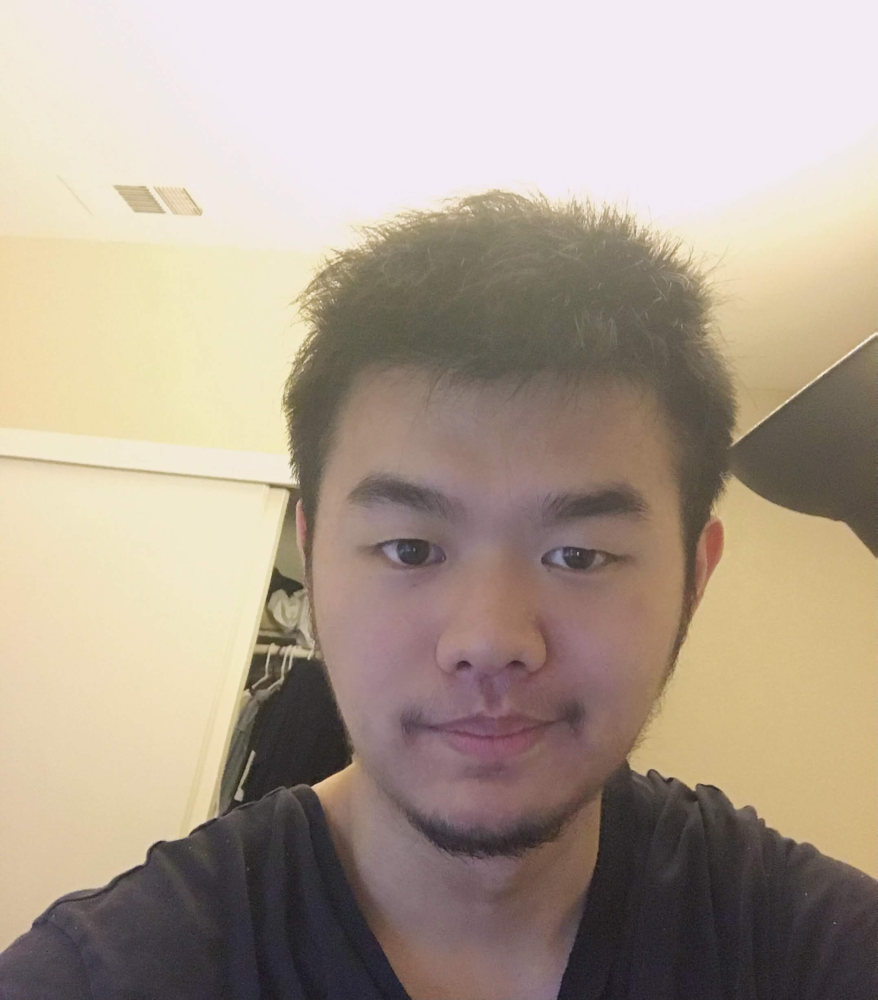

PERSONAL SPACE
A new space
This is a quiet place to collect ideas over time. Add whatever belongs here when you are ready.
BIOLOGY · A STUDY MAP
从生命起源到宏观世界，再到微观结构：这里会慢慢长成我的生物学笔记。
BIOLOGY · 起源
生命从环境、物质与漫长的变化中开始。这里留给生态与化学的线索。
BIOLOGY · 宏观
从可见的生命形态出发，认识不同尺度上的生物世界。
BIOLOGY · 微观
向更小的尺度走去：化学反应、细胞结构，以及生命运作的基础。
CHEMISTRY · A STUDY MAP
从一切的开始，到分子、反应与生命的化学语言。
01 / ABOUT MEWhy am I doing this?
为什么开始这个网站，为什么想留下自己的记录。
展开阅读 / Read more
我从小就在想：如果什么都不做、什么都不写，那么我或许只是这个世界上默默无闻的过客。我一直想做一个记录生活的网站，却可能因为拖延，也可能因为来自社会的压力，让这个想法一直空着。现在刚好有了时间，也有 AI 的帮助，我想从这里开始，写下自己的内心戏。
百年前，人们用油画、相机、日记与文学记录自己存在的证据。如今我们来到互联网时代，信息触手可及；我想借着这个时代，记录自己的生活、所获得的知识与经历，也写下对世界的感悟。
希望百年之后，未来的人仍能从这里得知：在二十一世纪初，曾有这样一个人，认真记录过日常琐事与内心所见。即使未来的世界进入更庞大的数据模型，我还是想留下属于自己的记录，让后辈知道我曾在这个世界出现过。
02 / ABOUT MEWho am I?
我的成长经历，以及生命科学与技术的学习旅程。
展开阅读 / Read more
我叫王杰，出生于 2002 年，是一名 00 后（Gen Z）。我出生在中国福建省福州市，十岁时移民到美国，在纽约布鲁克林生活了六年。
后来因为求学，我去了波士顿，在那里读了一年美高。读完高一后，因天气与家庭原因搬到加州萨克拉门托，并在那里完成了高中生涯。那时我也收到了多所名校的录取。
2020 年正值疫情期间；在高中老师的指导下，我最终选择加州大学戴维斯分校（University of California, Davis）作为本科母校。起初我向往生物科学，却还不确定具体方向，因此以 Undeclared Life Science 的身份探索了两年。
后来在室友的影响下，我选择了 Biochemistry and Molecular Biology（生物化学与分子生物学）作为专业。随着 AI 的兴起，我也选择 Bioinformatics 作为辅修，希望继续理解生命科学、数据与技术之间的联系。

03 / ABOUT MEMy Hobbies
音乐、游戏、摄影，以及徒步与山野中的探索。
展开阅读 / Read more
我是一个喜欢尝试新鲜事物的人，什么都想亲自去体验。我的兴趣包括打游戏、听各式各样的音乐、玩乐器、运动、拍照，以及探讨悖论。
最近，我受到一位朋友的启发，开始迷上户外运动、徒步和爬山。这对我来说是一段很值得投入的体验：在探索世界的同时，也锻炼自己。
04 / ABOUT MEMy Philosophy
我对生活、世界与价值的思考。
展开阅读 / Read more
这里留给我的人生哲学，具体内容将在之后慢慢补充。
05 / ABOUT MEMy Goal
我想实现的目标，以及未来想走向的方向。
展开阅读 / Read more
这里留给我的目标与计划，具体内容将在之后慢慢补充。
This page is intentionally open for future additions.